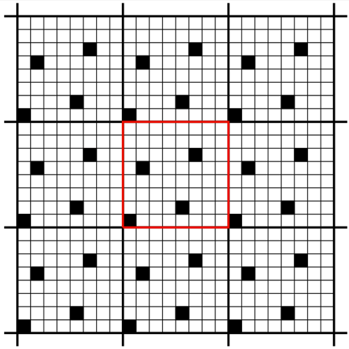
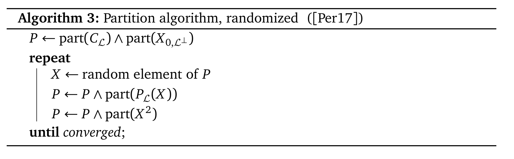
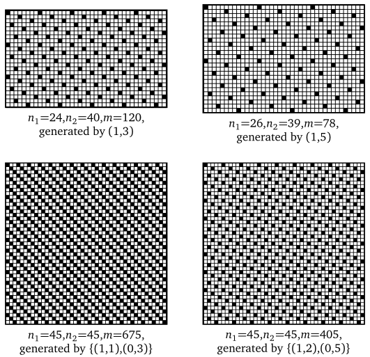
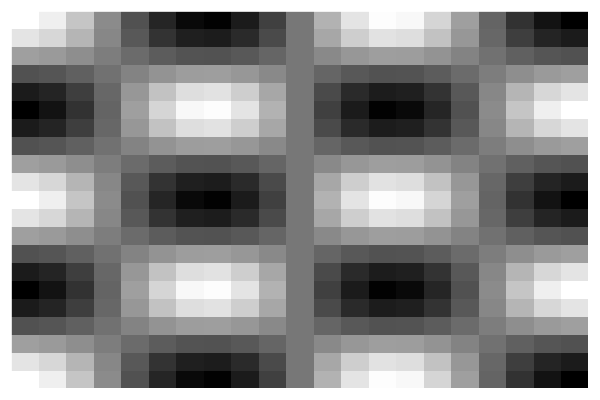
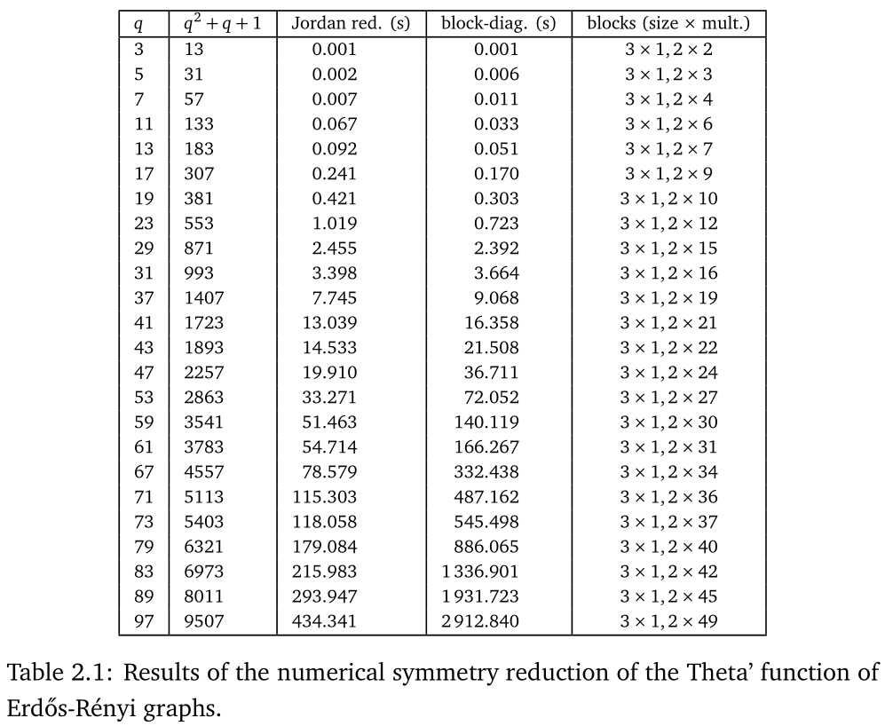
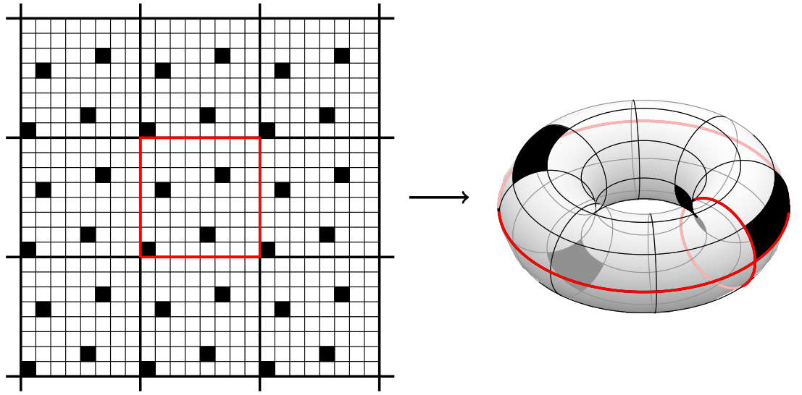
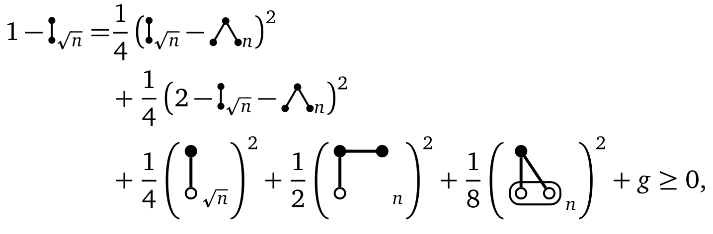

<!DOCTYPE html>
<html lang="en">
  <head>
    <meta charset="utf-8" />
    <meta name="viewport" content="width=device-width, initial-scale=1.0, maximum-scale=1.0, user-scalable=no" />

    <title>Pre-defense</title>
    <link rel="shortcut icon" href="./favicon.ico" />
    <link rel="stylesheet" href="./dist/reset.css" />
    <link rel="stylesheet" href="./dist/reveal.css" />
    <link rel="stylesheet" href="./dist/theme/night.css" id="theme" />
    <link rel="stylesheet" href="./css/highlight/zenburn.css" />


  </head>
  <body>
    <div class="reveal">
      <div class="slides"><section  data-markdown><script type="text/template">
$$\require{color}$$
<!-- reveal-md slides.md -w --theme night -->
<!-- reveal-md slides.md --theme night --static _site -->
<!-- Then copy videos! -->
<!-- and remove _asset paths -->
## Symmetry reduction in convex optimization 
#### with applications in combinatorics

<br/>

### Daniel Brosch
#### Tilburg University, June 15, 2022
</script></section><section  data-markdown><script type="text/template">
<div class="r-stack">
<div class="fragment fade-out" data-fragment-index="2">

### Symmetries of (optimization) Problems

<div class="r-stack">
<div class="fragment fade-out" data-fragment-index="1">



</div>

<div class="fragment fade-in" data-fragment-index="1">

\begin{align}
    \lim_{n\to\infty}\max \enspace&{\frac{1}{\binom n 2}\sum_{1\leq i<j\leq n} x_{ij}}\\\\
    \text{s.t.}\enspace & {\frac{1}{\binom{n}{3}}\sum_{1\leq i<j<k\leq n} x_{ij}x_{ik}x_{jk}} = 0,\\\\
    & x_{ij}\in\\{0,1\\} \quad \text{for all } i < j.
\end{align}
</div>
</div>

</div>
<div class="fragment fade-in-then-out" data-fragment-index="2">

### Searching for symmetries



</div>
<div class="fragment fade-in-then-out" data-fragment-index="3">

### Exploiting symmetries


</div>
<div class="fragment fade-in" data-fragment-index="4">

### To compute and prove bounds


<div class="r-stack">
<div class="fragment fade-out" data-fragment-index="5">




</div>
<div class="fragment fade-in" data-fragment-index="5">


</div>
</div>
</div>

</div>

<!-- <div class="row">
  <div class="column">
    <span>
    
    </span>
    
  </div>
  <div class="column">
    
    
  </div>
</div> -->
</script></section><section  data-markdown><script type="text/template">
## Overview of the thesis:

- **Chapter 1**: Introduction

- **Chapters 2-4**: <span> Jordan symmetry reduction for the doubly nonnegative cone and applications (joint work with <span style="color:orange">Etienne de Klerk</span>)</span> <!-- .element: class="fragment"-->

- **Chapter 5**: <span> Symmetry reduction as a proving tool (joint work with <span style="color:orange">Monique Laurent and Andries Steenkamp</span>)</span> <!-- .element: class="fragment" -->

- **Chapters 6-9**: <span> The symmetries of flag algebras</span> <!-- .element: class="fragment" -->
</script></section><section ><section data-markdown><script type="text/template">
## Chapter 2
### Jordan reduction over the doubly nonnegative cone

$$\mathcal{D}^n = \mathbb{S}^n_+\cap \mathbb{R}^{n\times n}_+ $$

<aside class="notes"><p>Often needed for strong relaxations of combinatorial problems</p>
</aside></script></section><section data-markdown><script type="text/template">
### Jordan reduction

Introduced by Parrilo and Permenter in 2019, the <span style="color:orange">Jordan reduction method</span> generalizes and strengthens symmetry reduction techniques for <span style="color:orange">symmetric</span> cones.

<br/>

<span>We extend the method to the doubly nonnegative cone, which is <span style="color:orange">non-symmetric</span>. </span><!-- .element: class="fragment" data-fragment-index="1"-->

<aside class="notes"><p>Symmetric = self-dual and homogenous (automorphisms are transitive, i.e. one orbit of automorphisms)</p>
</aside></script></section><section data-markdown><script type="text/template">
### Reduction algorithm for $\mathcal{D}^n$

<br/>

<div class="r-stack">
<div class="fragment fade-out" data-fragment-index="1">
We show that, under slight assumptions, the optimal reduction is given by a <span style="color:orange">partition-space based algorithm</span>.
</div>
<div class="fragment fade-in-then-out" data-fragment-index="1">


</div>
<div class="fragment fade-in" data-fragment-index="2">
We provide an implementation in form of the  <span style="color:orange">Julia package "SDPSymmetryReduction.jl".</span>
</div>
</div>
</script></section><section data-markdown><script type="text/template">
</script></section></section><section ><section data-markdown><script type="text/template">
## Chapter 3
### Relaxations of the quadratic assignment problem

$$\mathrm{QAP}({\color{orange}A},{\color{green}B}):= \min_{\varphi\in S_n}\left(\sum_{i,j=1}^n {\color{orange}a_{ij}}{\color{green}b_{\varphi(i)\varphi(j)}}\right)$$
</script></section><section data-markdown><script type="text/template">
### Three known bounds for QAPs

- <span style="color:orange">Projected eigenvalue</span> bound 
- <span> (Convex) <span style="color:orange">quadratic programming</span> bound </span> <!-- .element: class="fragment" data-fragment-index="1"-->
- <span>SDP bound with <span style="color:orange">doubly nonnegative</span> matrices</span> <!-- .element: class="fragment" data-fragment-index="2"-->

<br/>

<div class="r-stack">
<div class="fragment fade-out" data-fragment-index="1">

$$\small\mathrm{PB}({\color{orange}A},{\color{green}B}) := \langle \lambda_{\tilde{{\color{orange}A}}},\mu_{\tilde{{\color{green}B}}}\rangle^-+\min_{\varphi\in S_n}\sum_{i=1}^{n}d_{i\varphi(i)}-\frac{(e^T{\color{orange}A}e)(e^T{\color{green}B}e)}{n^2},$$

where $\tilde{{\color{orange}A}}$ and $\tilde{\color{green}B}$ are projections of ${\color{orange}A}$ and $\color{green}B$,
$$\small D = \frac{2}{n}{\color{orange}A}ee^T{\color{green}B} \text{ and } \langle x ,y\rangle^-=\min_{\varphi\in S_n} \sum_{i=1}^{n} x_{\varphi(i)}y_i.$$ 

</div>
<div class="fragment fade-in-then-out" data-fragment-index="1">
$$
\small
\begin{align}
    QPB({\color{orange}A},{\color{green}B}) := \min \enspace & y^T\hat{Q}y +  \langle \lambda_{\tilde{{\color{orange}A}}},\mu_{\tilde{{\color{green}B}}}\rangle^- + \frac{2}{n}\mathrm{tr}\left({\color{green}B}J_n{\color{orange}A}X\right) - \frac{(e^T{\color{orange}A}e)(e^T{\color{green}B}e)}{n^2}, \\
    \text{s.t. }\enspace             & X\geq 0 \text{ is doubly stochastic},                                                                                        \\
                                     & X=\frac{1}{n}ee^T + VYV^T,                                                                                                   \\
                                     & y = \mathrm{vec}(Y),
  \end{align}
$$
where $\hat{Q}$ is a <span style="color:orange">positive semidefinite matrix</span> constructed from ${\color{orange}A}$ and ${\color{green}B}$.
</div>
<div class="fragment fade-in-then-out" data-fragment-index="2">
$$\small
\begin{align}
  SDPQAP({\color{orange}A},{\color{green}B}) := \min\enspace & \langle {\color{green}B}\otimes {\color{orange}A},Y\rangle            \\
  \mathrm{s.t.}\enspace                & \langle I_n\otimes E_{jj},Y\rangle=1 \text{ for }j=1,\ldots,n,\nonumber \\
                                       & \langle E_{jj}\otimes I_n,Y\rangle=1 \text{ for }j=1,\ldots,n,\nonumber \\
                                       & \langle I_n\otimes (J_n-I_n)+(J_n-I_n)\otimes I_n,Y\rangle =0,\nonumber \\
                                       & \langle J_{n^2},Y\rangle = n^2,\nonumber                                \\
                                       & Y\in \mathbb{S}^{n^2}_+ \cap \mathbb{R}^{n^2\times n^2}_{\geq 0},\nonumber
\end{align}
$$
</div>
<div class="fragment fade-in" data-fragment-index="3">

We show that the bounds get better as their computational complexity increases:

\begin{align}
\mathrm{PB}({\color{orange}A},{\color{green}B}) &\leq \mathrm{QPB}({\color{orange}A},{\color{green}B})  \\\\
&\leq \mathrm{SDPQAP}({\color{orange}A},{\color{green}B}) \\\\
&\leq \mathrm{QAP}({\color{orange}A},{\color{green}B}).
\end{align}

</div>
</div>

<aside class="notes"><p>Projections onto orthogonal complement of $e$ on columns and rows.</p>
</aside></script></section><section data-markdown><script type="text/template">
### Symmetry reduction of the SDP bound

We apply the (extended) <span style="color:orange">Jordan reduction</span> method of Chapter 2 to the SDP bound:

- We show that the <span style="color:orange">partition-space</span> based algorithm returns the optimal reduction, under weaker conditions than before.
- We apply the reduction computationally to instances from <span style="color:orange">QAPLib</span>.
</script></section></section><section ><section data-markdown><script type="text/template">
## Chapter 4
### Energy minimization on a toric grid


</script></section><section data-markdown><script type="text/template">
### Energy minimization

<div class="r-stack">
<div class="fragment fade-out" data-fragment-index="2">

We want to place $\color{orange}m$ <span style="color:orange">repulsive particles</span> on a toric grid of size $\color{green}n_1\times n_2$, such that their total energy is minimized.

<br/>

<div class="fragment" data-fragment-index="1">
The energy between two particles at positions ${\color{orange}a=(a_1, a_2)}$ and $\color{green}b=(b_1, b_2)$ is given by
$$  \frac{1}{d_{\text{Lee}}({\color{orange}a},{\color{green}b})} = \frac{1}{\sum_{i=1,2}\min (|{\color{orange}a_i}-{\color{green}b_i}|, n_i - |{\color{orange}a_i}-{\color{green}b_i}|) }$$
</div>
</div>
<div class="fragment fade-in" data-fragment-index="2">

Equivalently, we can reformulate the problem as a <span style="color:orange">quadratic assignment problem</span> $\mathrm{QAP}(A,B)$:


\begin{align}
A &= \begin{pmatrix}J_{{\color{orange}m},{\color{orange}m}} & 0\\\\ 0 & 0\end{pmatrix} \in \mathbb{R}^{(n_1n_2)\times (n_1n_2)}\\\\
B &= \left(\frac{1}{d_{\text{Lee}}({\color{orange}a},{\color{green}b})}\right)_{{\color{orange}a},{\color{green}b} \in [n_1]\times [n_2]}
\end{align}

</div>
</div>

<aside class="notes"><p>Diagonal of B is zero.</p>
</aside></script></section><section data-markdown><script type="text/template">
### Comparing bounds for the problem

We show that the <span style="color:orange">projected eigenvalue</span> and <span style="color:orange">convex quadratic programming</span> bounds coincide with the <span style="color:orange">fractional energy</span> bound of <span style="color:green">Bouman, Draisma and Leeuwaarden</span>:

<div class="r-stack">
<div class="fragment fade-out" data-fragment-index="1">

\begin{align}
  \min\enspace           & x^TBx \\\\
  \mathrm{s.t. }\enspace & x^Tx = x^Te = {\color{orange}m}.
\end{align}

</div>
<div class="fragment fade-in" data-fragment-index="1">

The SDP bound based on <span style="color:orange">doubly nonnegative</span> matrices is generally stronger, but involves <span style="color:red">matrices of size $(n_1n_2)^2\times (n_1n_2)^2$</span>.

</div>
</div>
</script></section><section data-markdown><script type="text/template">
### Symmetry reduction of the SDP bound

We apply the <span style="color:orange">Jordan reduction method</span> to $\mathrm{SDPQAP}(A,B)$ analytically, reducing the number of variables to $\mathcal{O}(n_1n_2)$, down from $\mathcal{O}(n_1^4n_2^4)$.

<br/>

<div class="fragment" data-fragment-index="1">
We then <span style="color:orange">block-diagonalize</span> the obtained <span style="color:orange">Jordan algebra</span> using algebraic methods.


</div>

<aside class="notes"><p>We never use the fact that groups act on the rows and columns of the SDP to find the low dimensional subspace.</p>
</aside></script></section><section data-markdown><script type="text/template">
### Results

<div class="r-stack">
<div class="fragment fade-out" data-fragment-index="1">
We obtain an equivalent <span style="color:orange">second order cone problem</span> with $\mathcal{O}(n_1n_2)$ cones:
$$\scriptsize
  \begin{align}
    \inf\enspace & n\sum_{i+j>0}\frac{y^{b \to b}_{ij}}{i+j}\label{ReducedSDPPrimal}                                                                                                                                                     \\
    \mathrm{s.t.}\enspace %& y^b= \frac{m}{n},\quad y^w=\frac{n-m}{n},\\
                 & \sum_{i+j>0}\left(y^{b\to b}_{ij}+y^{w\to w}_{ij} + y^{b\leftrightarrow w}_{ij}\right)=n-1,\label{RedSDPSum}                                                                                                          \\
                 & \text{for all } 0\leq k\leq \left\lfloor\frac{n_1}{2}\right\rfloor, 0\leq l\leq \left\lfloor\frac{n_2}{2}\right\rfloor\colon         \nonumber                                                                                 \\
                 & \quad \begin{pmatrix}
                           \frac{m}{n} & 0             \\
                           0           & \frac{n-m}{n}
                         \end{pmatrix} + \sum_{i+j>0}d^{kl}_{ij}\begin{pmatrix}
                                                                  y^{b \to b}_{ij}                       & \frac{1}{2} y^{b\leftrightarrow w}_{ij} \\
                                                                  \frac{1}{2}y^{b\leftrightarrow w}_{ij} & y^{w \to w}_{ij}
                                                                \end{pmatrix}\succcurlyeq 0,\label{RedSDPPSD}                                                                                         \\
                 & \quad \frac{m(m-1)}{n}-\sum_{i+j>0}d^{kl}_{ij}y^{b \to b}_{ij}\geq 0,\label{RedSDPB}                                                                                                                                  \\
                 & \quad \frac{(n-m)(n-m-1)}{n}-\sum_{i+j>0}d^{kl}_{ij}y^{w \to w}_{ij}\geq 0\label{RedSDPW},                                                                                                                            \\
                 & y_{ij}^{b\to b},y_{ij}^{w\to w},y_{ij}^{b\leftrightarrow w}  \ge 0 \; \forall \enspace i+j>0, \enspace i=0,\ldots,\left\lfloor\frac{n_1}{2}\right\rfloor, \enspace j=0,\ldots,\left\lfloor\frac{n_2}{2}\right\rfloor.\nonumber
  \end{align}
$$
</div>
<div class="fragment fade-in-then-out" data-fragment-index="1">

We can <span style="color:orange">interpret</span> the variables, allowing us to <span style="color:orange">construct optimal solutions</span> of the original problem. With a targeted search in cases where $\color{orange}m$ divides $n_1n_2$, we identify<span style="color:orange"> 2382 cases where the bound is sharp</span> up to grid size $50\times 50$.


</div>
<div class="fragment fade-in" data-fragment-index="2">

We make some progress towards the <span style="color:orange">checkerboard conjecture</span>: The checkerboard is the best solution if both $n_1$ and $n_2$ are even and ${\color{orange}m}=\frac{n_1n_2}{2}$.

<br/>

We (nearly) <span style="color:orange">construct optimal solutions</span>, reducing the computationally sharp lower bound to finding the minimum of $\mathcal{O}(n_1n_2)$ real numbers with closed forms. These correspond to energies of <span style="color:orange">fractional, lattice-like solutions</span>: 


</div>

</div>

</script></section></section><section ><section data-markdown><script type="text/template">
## Chapter 5
### Hypergraph-based polynomials from queuing with redundancy scheduling

Based on a problem of Cardinaels, Borst, van Leeuwaarden.
</script></section><section data-markdown><script type="text/template">
### Polynomials on hypergraphs

Let $V = \\{1,\ldots,n\\}$, ${\color{orange}E} = \binom{V}{L}$ and $\Delta_{|{\color{orange}E}|} = \\{x\in \mathbb{R}^{\color{orange}E}_{\geq 0}\colon e^T x = 1\\}$.

<br/>

We want to show that 
$$f_{\color{green}d}(x) = \sum_{(e_1,\ldots,e_{\color{green}d})\in {\color{orange}E}^{\color{green}d}}\prod_{i=1}^{\color{green}d}\frac{x_{e_i}}{|e_1\cup \ldots \cup e_i|}$$
attains its minimum at
$$\min_{x\in \Delta_m}f_{\color{green}d}(x) = f_{\color{green}d}\left(\frac{e}{|{\color{orange}E}|}\right).$$
</script></section><section data-markdown><script type="text/template">
### Queuing with redundancy scheduling

In queuing problems, one can consider <span style="color:orange">redundancy scheduling</span>: Whenever a problem arrives, send it to <span style="color:orange">multiple servers</span>.

<br/>

<div class="fragment" data-fragment-index="1">

Cardinaels, Borst, and van Leeuwaarden investigate the question as to how the subset of servers should be chosen. In the <span style="color:orange">light traffic regime</span> the choice is important, and they conjecture that the <span style="color:orange">uniform distribution</span> is optimal.

</div>

<br/>

<div class="fragment" data-fragment-index="2">

This question is equivalent to showing 
$$\min_{x\in \Delta_m}f_{\color{green}d}(x) = f_{\color{green}d}\left(\frac{e}{|{\color{orange}E}|}\right).$$
</div>

</script></section><section data-markdown><script type="text/template">
### An easier family of polynomials

We can prove convexity of the related family of polynomials 

\begin{equation}
    p_{\color{green}d}(x)=\sum_{(e_1,\ldots, e_{\color{green}d})\in E^{\color{green}d}} {1\over |e_1\cup \ldots \cup e_{\color{green}d}|} x_{e_1}\cdots x_{e_{\color{green}d}},
\end{equation}

as well as some small special cases of $f_{\color{green}d}$.
</script></section><section data-markdown><script type="text/template">
### Our idea: Symmetries

The polynomials $f_{\color{green}d}$ are symmetric under the action of $\color{orange}S_n$ on the vertices $V$.

<br/>

If we can show that the polynomials are <span style="color:orange">convex</span>, we can show that there is a <span style="color:orange">symmetric optimal solution</span>, which is unique:

$$ \frac{1}{|{\color{orange}S_n}|} \sum_{\sigma \in {\color{orange}S_n}} \sigma(x^*) = \frac{e}{|{\color{orange}E}|}$$

<aside class="notes"><p>This is a stronger property than needed.</p>
</aside></script></section><section data-markdown><script type="text/template">
### Proving convexity of a polynomial

We first split the <span style="color:orange">Hessian</span> of $p_{\color{green}d}$ by monomials

$$ H(p_{\color{green}d})(x)= \Big({\frac{\partial^2 p_{\color{green}d}(x)}{\partial x_{e_i} \partial x_{e_j}}}\Big)_{i,j=1}^m = \sum\_ {\gamma\in \mathbb{N}^m\_ {{\color{green}d}-2}} \frac{{\color{green}d}!}{\gamma!}x^\gamma M_\gamma.$$

As the variables $x_e$ are nonnegative, the Hessian is positive semidefinite if <span style="color:orange">each $M_\gamma$ is positive semidefinite.</span>
</script></section><section data-markdown><script type="text/template">
### Involving symmetries

We can exploit the symmetries here in two ways:

- We only need to show $M_\gamma\succcurlyeq 0$ for a representative of each <span style="color:orange">orbit</span> of the matrices ${\color{orange}S_n}(M_\gamma)$.
- After deleting duplicate rows and columns, each $M_\gamma$ lies in the <span style="color:orange">Terwilliger algebra</span> of the binary Hamming cube.
- We apply the known <span style="color:orange">block-diagonalization</span> to each $M_\gamma$.
- Using a trick already used by Hilbert, we show that each block is an <span style="color:orange">integral over outer products of vectors</span>, and as such PSD.
</script></section><section data-markdown><script type="text/template">
### Partial results for $f_{\color{green}d}$

We give a <span style="color:orange">recursive formula</span> for the matrices defining the Hessian of $f_{\color{green}d}$ involving the matrices $M_\gamma$ appearing in the Hessian of $p_{\color{green}d}$.

We manage to prove convexity in the cases where ${\color{green}d}=2$, or $n\geq 2, {\color{green}d}=3$ and $L=2$.


<br/>

<span style="color:orange">Sven Polak</span> extended our results for the cases $L=2$ and $d\leq 9$.
</script></section></section><section ><section data-markdown><script type="text/template">
## Chapter 6
### Four views at flag algebras


</script></section><section data-markdown><script type="text/template">
### Flag algebras

Let $({\color{orange}G_n})_{n=1}^\infty$ be a sequence of graphs, where ${\color{orange}G_n}$ is a graph on $[n]$, and ${\color{green}H}$ a fixed finite graph.

<br/>

<div class="fragment" data-fragment-index="1">
<span style="color:orange">Razborov</span> introduced flag algebras as limits of <span style="color:orange">induced submodel densities</span>:

$$\lim_{n\to \infty} \mathbb{P}\left[{\color{green}H} \simeq {\color{orange}G_n}|_{\sigma(V({\color{green}H}))}\right].$$

</div>

<br/>

<div class="fragment" data-fragment-index="2">

In this chapter, I give a basic introduction to flag algebras in the <span style="color:orange">non-induced</span> setting:

$$\lim_{n\to \infty} \mathbb{P}\left[\sigma({\color{green}H}) \text{ is a subgraph of } {\color{orange}G_n}\right].$$


</div>
</script></section><section data-markdown><script type="text/template">
### Why did Razborov chose induced densities?

If there are <span style="color:orange">axioms</span> in the first order model theory the flag algebra is based on, they generally cannot be formulated directly in the non-induced setting.

<br/>

<div class="fragment" data-fragment-index="1">
I introduce a simple workaround with what I call <span style="color:orange">valid</span>, <span style="color:orange">invalid</span> and <span style="color:orange">incomplete</span> flags. This makes it possible to always work with non-induced densities, which are significantly easier to work with.
</div>

</script></section><section data-markdown><script type="text/template">
### Four views at flag algebras

I investigate four different views at flag algebras, and how to <span style="color:orange">translate between them</span>:

- <span style="color:orange">Non-induced</span> densities
- <span style="color:orange">Induced</span> densities
- <span style="color:orange">Harmonic</span> densities, a novel basis coming from harmonic analysis
- Limits of <span style="color:orange">polynomials</span>
</script></section></section><section ><section data-markdown><script type="text/template">
## (background) Chapter 7
### Gatermann-Parrilo reduction for polynomials with $S_n$ symmetry

<br/>

A (mostly) <span style="color:orange">self-contained introduction</span> to symmetry reduction for polynomial optimization, with focus on the <span style="color:orange">representation theory</span> of $S_n$.
</script></section><section data-markdown><script type="text/template">
### Small contributions

- A <span style="color:orange">detailed proof</span> that the reduction actually works

- <span>Better <span style="color:orange">notation</span> for homomorphisms in $\mathrm{hom}(S^\lambda, M^\mu)$</span> <!-- .element: class="fragment" data-fragment-index="1"-->

- <span>Generalization of an <span style="color:orange">algorithm</span> of <span style="color:orange">Dion Gijswijt</span> to compute the coefficients in the block-diagonalized SDPs</span> <!-- .element: class="fragment" data-fragment-index="2"-->
</script></section></section><section ><section data-markdown><script type="text/template">
## Chapter 8
### Symmetry reduced flag SOS hierarchies

<br/>

Recently, <span style="color:orange">Raymond, Saunderson, Singh and Thomas</span> observed that one can obtain flag algebras as limits of polynomial optimization hierarchies, if one <span style="color:orange">exploits their symmetries partially</span>.

<br/>

We exploit their symmetries <span style="color:orange">fully</span>.
</script></section><section data-markdown><script type="text/template">
### Flags as polynomials 

<div class="r-stack">
<div class="fragment fade-out" data-fragment-index="1">
Maximizing the <span style="color:orange">edge density</span> in a <span style="color:green">triangle</span>-free graph can be reformulated as:

\begin{align}
    \lim_{n\to\infty}\max \enspace&{\color{orange}\frac{1}{\binom n 2}\sum_{1\leq i<j\leq n} x_{ij}}\\\\
    \text{s.t.}\enspace & {\color{green}\frac{1}{\binom{n}{3}}\sum_{1\leq i<j<k\leq n} x_{ij}x_{ik}x_{jk}} = 0,\\\\
    & x_{ij}\in\\{0,1\\} \quad \text{for all } i < j.
\end{align}

</div>
<div class="fragment fade-in" data-fragment-index="1">
Here we work with polynomials in <span style="color:orange">binary variables</span> $x_{ij}$, where $1\leq i< j\leq n$.

<br/>
<br/>

<div class="fragment" data-fragment-index="1">
Each appearing polynomial is invariant under the action of ${\color{orange}S_n}$ given by
$${\color{orange}\sigma}(x_{ij}) = x_{{\color{orange}\sigma}(i){\color{orange}\sigma}(j)}.$$
</div>

<br/>

<div class="fragment" data-fragment-index="2">
This turns the truncated vectorspace of polynomials in binary variables into an <span style="color:orange">$S_n$-module:</span>
$$\mathbb{R}[x]_{\leq d}/ \langle x_{ij}(1-x_{ij}) \rangle .$$

</div>


</div>
</div>

</script></section><section data-markdown><script type="text/template">
### The decomposition of $\mathbb{R}[x] _ {\leq d}/ \langle x_{ij}(1-x_{ij}) \rangle$

<div class="r-stack">
<div class="fragment fade-out" data-fragment-index="2">

To <span style="color:orange">block-diagonalize</span> the invariant matrices under the action of ${\color{orange}S_n}$, we need to decompose the module into <span style="color:orange">irreducible submodules</span>.

<br/>


<div class="fragment" data-fragment-index="1">
Due to the <span style="color:orange">high dimension of the initial module</span>, existing methods are not applicable for small cases already. A <span style="color:orange">new algorithm</span> was needed. 
</div>

</div>
<div class="fragment fade-in" data-fragment-index="2">

We give an algorithm to find the <span style="color:orange">explicit decomposition</span> of quotients of permutation modules
$$\color{orange}M^\lambda/F,$$
where $F$ is a group of permutations acting on rows of tabloids.

<br/>

<div class="fragment" data-fragment-index="3">
This has already found application in a new preprint together with <span style="color:orange">Sven Polak</span> for bounds on <span style="color:orange">crossing numbers</span> of $K_{m,n}$.  
</div>

</div>
</div>
</script></section><section data-markdown><script type="text/template">
### Interpretation and limit

We give an interpretation of the thus obtained flags, which we call <span style="color:orange">Specht flags</span>:



</script></section><section data-markdown><script type="text/template">
### Graph-profiles

<div class="r-stack">
<div class="fragment fade-out" data-fragment-index="1">

Let $\color{orange}G$ and $\color{green}H$ be two (Quantum-)Graphs.

The <span style="color:orange">Graph-profile</span> of $\color{orange}G$ and $\color{green}H$ is the set of possible values

$$\left\lbrace (p(\mathcal{G}, {\color{orange}G} ), p(\mathcal{G}, {\color{green}H} )) : \mathcal{G} \text{ sequence of graphs}\right\rbrace.$$

</div>
<div class="fragment fade-in-then-out" data-fragment-index="1">

<span style="color:orange">Razborov</span> calculates the <span style="color:orange">triangle</span>-<span style="color:green">edge</span> graph profile:


<!--  -->

<!--  -->


</div>
<div class="fragment fade-in-then-out" data-fragment-index="2">

We can find an <span style="color:orange">outer approximation</span> of graph profiles by solving

$$\max \int_0^1 f \text{ s.t. } {\color{orange}G} - f({\color{green}H}) \geq 0,$$

for a lower bound, where $f$ is a <span style="color:orange">univariate</span> polynomial. We solve a similar problem for an upper bound.


</div>

<div class="fragment fade-in-then-out" data-fragment-index="3">

One function is not enough:


</div>
<div class="fragment fade-in" data-fragment-index="4">


Cutting $[0,1]$ into many intervals works well:


</div>
</div>

<aside class="notes"><p>Very few known; edge + Kn, some approximations of slices of profile of small graphs.</p>
</aside></script></section><section data-markdown><script type="text/template">


</script></section><section data-markdown><script type="text/template">

</script></section><section data-markdown><script type="text/template">
### Flag algebras for degenerate extremal combinatorics

<div class="r-stack">
<div class="fragment fade-out" data-fragment-index="1">

Recently, <span style="color:orange">Lovász</span> talked about attempts at <span style="color:orange">generalizing graph limits for degenerate limits</span> in his <span style="color:orange">Abel-price lecture</span>. These are problems where the <span style="color:orange">edge-density</span> approaches zero as $n$ increases.

<br/>

Flag algebras have so far been <span style="color:orange">useless</span> in these cases.

</div>
<div class="fragment fade-in" data-fragment-index="1">

A single, <span style="color:orange">SOS-based certificate</span> for the <span style="color:orange">rate</span> at which the edge density approaches zero for <span style="color:orange">$C_4$-free graphs</span>:




These are obtained by taking <span style="color:orange">different limits</span> of the sequences of polynomial hierarchies obtained by <span style="color:orange">scaling them differently</span>. 

</div>
</div>


</script></section></section><section ><section data-markdown><script type="text/template">
## Chapter 9
### Moebius-transformation based symmetry reduction

<br/>

A generalization of <span style="color:orange">Razborov's hierarchy</span> and its <span style="color:orange">connection to the Lasserre hierarchy</span>.
</script></section><section data-markdown><script type="text/template">
### A truncation by number of vertices

Instead of truncating by degree, we <span style="color:orange">limit the maximum number of vertices</span> in appearing graphs:

$$f = \sum_i {\color{orange}p_i}^2 \geq 0,$$
where <span style="color:red">each</span> square ${\color{orange}p_i}$ contains graphs with at most $\color{green}T$ vertices.

<br/>

<div class="fragment" data-fragment-index="1">
This enforces a <span style="color:orange">sparsity pattern</span> in a <span style="color:orange">rank one decomposition</span> of the positive semidefinite matrix representing SOS.
</div>
</script></section><section data-markdown><script type="text/template">
### Maximal cliques in the sparsity pattern

We identify a family of <span style="color:orange">maximal cliques</span> in the graph given by the enforced sparsity pattern.

<br/>

We <span style="color:orange">relax</span> the problem further to decompose into positive semidefinite matrices following this pattern:
$$\sum_{C \text{ maximal clique in the found family}}M_C,$$
where each $M_C\succcurlyeq 0$.
</script></section><section data-markdown><script type="text/template">
### Möbius-transformation based reduction

We can immediately restrict ourselves to <span style="color:orange">representatives</span> of each orbit of maximal clique.

<br/>

<div class="fragment" data-fragment-index="1">

Each block has symmetry $S_{\color{green}k}\times S_{n-{\color{green}k}}$, with ${\color{green}k}\ll n$. Furthermore, they are 

<span style="color:orange">closed under addition of edges within $[{\color{green}k}]$</span>.

<br/>

<div class="fragment" data-fragment-index="2">

We can apply a <span style="color:orange">Möbius-transformation</span> on the first ${\color{green}k}$ vertices to <span style="color:orange">partially diagonalize</span> each block.

</div>
</div>
</script></section><section data-markdown><script type="text/template">
### Razborov's hierarchy

We then obtain <span style="color:orange">Razborov's hierarchy</span> by considering only the vectors <span style="color:orange">invariant</span> under $S_{n-{\color{green}k}}$. Obtaining them this way allows us to compare the hierarchies:

<br/>

We have 
  \begin{equation}
    \mathrm{Las}_{2{\color{orange}d}} \geq \mathrm{Raz} _{4\color{orange}d}
  \end{equation}
  and
  \begin{equation}
    \mathrm{Raz} _{\color{green}T} \geq \mathrm{Las} _{2\binom{{\color{green}T}}{2}},
  \end{equation}
where <span style="color:orange">lower means better</span>.

<br/>

<div class="fragment" data-fragment-index="1">
We also manage to <span style="color:orange">reduce</span> the hierarchies <span style="color:orange">further</span> from here.

</div>
</script></section></section><section  data-markdown><script type="text/template">
# Thank you!
</script></section></div>
    </div>

    <script src="./dist/reveal.js"></script>

    <script src="./plugin/markdown/markdown.js"></script>
    <script src="./plugin/highlight/highlight.js"></script>
    <script src="./plugin/zoom/zoom.js"></script>
    <script src="./plugin/notes/notes.js"></script>
    <script src="./plugin/math/math.js"></script>
    <script>
      function extend() {
        var target = {};
        for (var i = 0; i < arguments.length; i++) {
          var source = arguments[i];
          for (var key in source) {
            if (source.hasOwnProperty(key)) {
              target[key] = source[key];
            }
          }
        }
        return target;
      }

      // default options to init reveal.js
      var defaultOptions = {
        controls: true,
        progress: true,
        history: true,
        center: true,
        transition: 'default', // none/fade/slide/convex/concave/zoom
        plugins: [
          RevealMarkdown,
          RevealHighlight,
          RevealZoom,
          RevealNotes,
          RevealMath
        ]
      };

      // options from URL query string
      var queryOptions = Reveal().getQueryHash() || {};

      var options = extend(defaultOptions, {"pdfSeparateFragments":true,"transition":"slide","minScale":0.2,"maxScale":2,"width":1440,"height":1050}, queryOptions);
    </script>

    <script src="./plugins/manim.js"></script>
    <script src="./plugin.js"></script>

    <script>
      Reveal.initialize(options);
    </script>
  </body>
</html>
